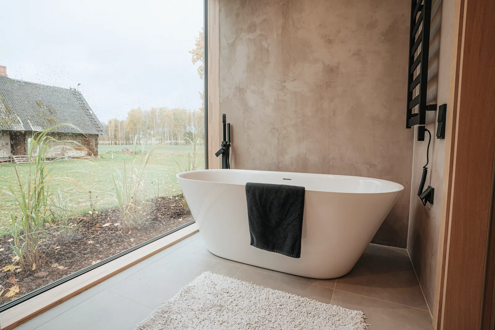

Amme ikkunan eteen, pellon puolelle.
Vuonna 1984 rakennetun omakotitalon kylpyhuone oli pieni ja pimeä, vaikka talon takana aukeaa pelto. Nyt amme on ison ikkunan edessä ja seinät ovat yhtä saumatonta pintaa.

- Paikka
- Nuuksio, Espoo
- Talo
- Omakotitalo 1984
- Pinta-ala
- 8,4 m²
- Työmaalla
- 19 työpäivää
- Valmistui
- Marraskuu 2025
- Hinta
- 31 900 €
- Kotitalousvähennys
- 3 200 €
Lähtötilanne
Alkuperäiset laatat, pieni ikkuna korkealla ja lattiakaivo, jonka kallistus vei vettä kynnykselle päin. Omistajat halusivat ammeen ja näkymän takapihan pellolle.
Ratkaisu
Ikkuna suurennettiin lattiaan asti ja kaivo siirrettiin sen alle, jolloin koko lattia voitiin kallistaa yhteen suuntaan. Seinät saivat sementtipohjaisen tasoitepinnan, joka jatkuu ilman saumoja. Lattiaan valittiin isokokoinen laatta, jotta saumoja on vähän.
Miksi Kallistus
Omistajat vertasivat kolmea tarjousta. Kallistus ei ollut halvin, mutta ainoa, joka näytti, miten vedeneristys dokumentoidaan. Se ratkaisi.

Kuivakansiosta.
Kuusi otetta 46 kuvan kansiosta. Kansio jää omistajille, ja se kulkee talon mukana, jos talo myydään.
- Pv 1
Suojaus ja purku
Eteinen ja kulkureitti suojattiin, vanhat laatat ja kalusteet purettiin pölynpoistolla. Kartoitusraportti oli valmis viikkoa aiemmin, asbestia ei löytynyt.

- Pv 3
Kosteusmittaus ja rungot
Vanhan lattiakaivon ympäriltä mitattiin kohonneita arvoja. Märkä kohta kuivatettiin, ja ikkunaseinä avattiin uutta, isompaa ikkunaa varten.
- Pv 5
Kallistusvalu
Uusi kaivo siirrettiin ikkunan alle, ja koko lattia valettiin kallistuksella 1:80. Kuivumista seurattiin kaksi päivää.
- Pv 8
Vedeneristys
Kaksi kerrosta, nurkkavahvikkeet ja läpivientikaulukset. Kalvopaksuus mitattiin 12 kohdasta. Omakotitalossa ei ole taloyhtiön valvojaa, joten kävimme kuvat läpi omistajien kanssa ennen laatoitusta.

- Pv 12
Laatoitus
Lattiaan 60 × 60 cm laatta, seinille sementtipohjainen tasoitepinta. Laatoitus alkoi kaivolta.

- Pv 19
Luovutus
Amme, tammiallaskaappi ja peili paikoilleen, painekoe, siivous ja luovutus. Kuivakansiossa 46 kuvaa.
Pyydä mittauskäynti.
Käynti kestää noin 45 minuuttia eikä maksa mitään. Kiinteän hinnan saat kolmen arkipäivän sisällä.
- 1Minna soittaa samana tai seuraavana arkipäivänä.
- 2Joonas mittaa kylpyhuoneen ja tuo laattanäytteet.
- 3Saat tarjouksen, aikataulun ja muutostyöilmoituksen luonnoksen.
Tai soita: 048 562 0821